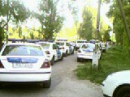

2007.04.30., vasárnap
tomcat
blog
droidzóna
levrov
Készül szépen az új blogmotor (tehát blog, és nem boltmotor, mert az már kész van). Most valami 30%-ban van kész. Lesz benne minden, amit mindig is szerettetek volna, csak nem mertétek kérni: regisztráció, kommentálás, RSS feed, keresõ, tartalomjegyzék, "best of" válogatás, link küldése e-mailben, PDF export nyomtatásra, meg ami még eszembe jut. Közben eltörött alattam a szék, bár tegnap meghegesztettem, de most megint lötyög, és csak idõ kérdése, hogy seggre essek. Tessék szurkolni, hogy ne történjék ilyen.
Ki se dugtam volna az orrom, ha nem kapok egy hírt, miszerint hirig van a Hajógyári szigeten, valami cigányok megtámadták a Jobbik majálisának közönségét. Gyorsan kirongyoltam, de a lényegrõl lemaradtam, bár szerencsére nem is volt sok lényeg, mert a verekedés elmaradt. Történt ugyanis, hogy valami agyatlan hülye nem csak a Jobbiknak, hanem az SZDSZ-nek is engedélyezte a majálisozást a szigeten, egymástól alig ötven méterre. A különbség, hogy míg a Jobbik színpada körül jó ötezren tolongtak, az SZDSZ-nek be kellett érnie néhány tucat lézengõ homokossal. Még ebbõl sem lett volna baj, hiszen sem a buzik, sem a Szkítia zenekar közönsége nem aggresszív fajta. A baj ott kezdõdött, amikor egy srác sokallotta a sorban állást a Jobbik sörsátránál, és átment az SZDSZ-hez. Ott azonban egy rakás tetves cigány üzemeltette a boltot, és szidalmazni kezdték a nagy-magyarországos pólója miatt. A srác visszaszólt, mire a szegény, megfélemlített romák elkeseredésükben baltákat és szamurájkardokat kaptak elõ (ezek a kempingezés kellékei), és nekirontottak. Õ erre visszaszaladt a Jobbik területére, elmondta, mi történt, mire elindult a cigányokhoz vagy ezer ember, elkérni a vásárlók könyvét. Persze a tetvesek sem pihentek, gyorsan összetelefonálták a rokonságot, akik jöttek is vagy nyolc kocsival, és így már majdnem negyvenen voltak. Hát, a matek nem erõsségük. Jöttek is, nagy bõszen hadonászva a baltáikkal meg a dorongjaikkal, hogy majd õk megmutatják mind az ötezernek! Csak azért nem lettek ronggyá zúzva, mert idõközben kijöttek a REBISZ rohamrendõrei is, és sorfallal állták el az útjukat.
A rendõrök azt mondták, közvetlen BRFK irányítás alatt állnak, személyesen Gergényi vezényelte õket. Érdekes módon azonban nem lõttek se gumilövedéket, se könnygázt a felfegyverkezett cigányokra, nem rohanták le õket lovakkal, és még elõ sem állították õket. Igaz, a sátrukat lebontatták velük, és holnap már nem lehetnek ott. Odaérkezésemkor a bontást még mindig tucatnyi rendõrautó és legalább két szakasznyi egyenruhás felügyelte.
A majálison egyébként remek lemezbemutató koncertet adott a Szkítia, és ezúttal nem zavarták meg õket bombafenyegetéssel. Holnap az Ismerõs Arcok és a Kormorán fognak zenélni.

Ezt a képet egy olvasóm készítette mobiltelefonnal: ennyi autóval kellett jönniük a rendõröknek, meg néhány mikrobusszal.

Este még mindig ott parkolt egy csomó, s a két-három pakolgató cigányt vagy ötven rendõr õrizte

Képek a Szkítia koncertjérõl

Pataki Mónika énekel, mögötte Hajas Marianna hegedül

Balról jobbra: Tóth Ferenc (furulyával), eltakarva Pad Richárdot (billentyûk), G. Szabó László (gitár), Alex Horsch (dorombbal), Sztrebka Erika (vokál)

Alex Horsch közelebbrõl

Tóth Ferenc közelebbrõl

Csõcselék
Közönség